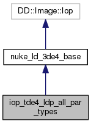

Nuke plugin based on tde4_ldp_all_par_types. More...
Inheritance diagram for iop_tde4_ldp_all_par_types:

Collaboration diagram for iop_tde4_ldp_all_par_types:

Public Member Functions | |
| CLASS_IOP_SDV (Node *node) | |
| const char * | Class () const |
| const char * | node_help () const |
 Public Member Functions inherited from nuke_ld_3de4_base Public Member Functions inherited from nuke_ld_3de4_base | |
| nuke_ld_3de4_base (Node *node, ldm_type *ldm) | |
| void | knobs (DD::Image::Knob_Callback f) |
| void | _validate (bool) |
| void | _request (int x, int y, int r, int t, DD::Image::ChannelMask channels, int count) |
| void | engine (int y, int x, int r, DD::Image::ChannelMask channels, DD::Image::Row &out) |
Additional Inherited Members | |
| Static Public Attributes inherited from nuke_ld_3de4_base | |
|
static const DD::Image::Iop::Description | description |
Detailed Description
Nuke plugin based on tde4_ldp_all_par_types.
The documentation for this class was generated from the following file:
- /server/devel/sdv/privat/uwe/source/ldpk/source/ldpk/nuke_ld_3de4_all_par_types.C